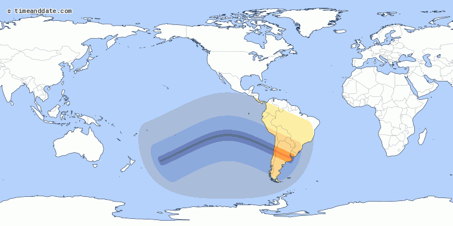

Are you interested in Astronomy and the infrequent events in the sky only visible periodically? Well this website is for you! (Those who answered yes). This website provides count downs to different events including upcomming eclipses, meteors, and other events. Hopefully this website successfully consolidates events so that the user can easily see what will be visible to them when and where.
Meteor Showers are celestial events in which meteoroids enter the Earth's atmosphere at high speeds and on parallel paths causing brief bright streaks in the sky. Although there are frequently meteor showers with low numbers of meteors per hour, there are brighter ones that happen throughout the year at predictable times. I have compiled eleven famous meteor showers known for being bright. Additionally it is worth noting that I included the lower numbers of recorded meteors per hour. When there is an exceptional amount of meteoroids (and if the sky is nice and clear) there can be as many as hundreds per hour. Finally I will mention as well that these meteor showers should be able to be viewed from wither hemisphere but sometimes the north or south is preferable based on the trajectory of the meteoroids.
Countdown Until the Next Bright Meteor Shower
| Meteor Showers | ||||
|---|---|---|---|---|
| Meteor Shower Name | Dates Visible | Peak Activity | Meteors Per hour at Peak | Best Visibility |
| Alpha Centaurids | January 28 to February 21 | February 8 | 6 | Southern Hemisphere |
| Lyrids | April 19 to 25 | April 23 | 10 | Both Hemispheres |
| Eta Aquariids | April 19 to May 28 | May 5 | 20 to 40 | Both Hemispheres |
| alpha Capricornids | July 3 to August 15 | July 30 | 25 | Southern Hemisphere |
| Southern delta Aquariids | July 12 to August 23 | July 30 | 20 | Southern Hemisphere |
| Perseids | July 17 to August 24 | August 12 | 12 to 13 | Northern Hemisphere |
| Orionids | October 2 to November 7 | October 21 | 20 | Both Hemispheres |
| Leonids | November 6 to November 30 | November 17 | 15 | Both Hemispheres |
| Geminids | December 4 to December 17 | December 14 | 30 | Both Hemispheres |
| Ursids | December 17 to December 26 | December 22 | 10 | Northern Hemisphere |
| Quadrantids | December 28 to January 12 | January 3 | 120 | Northern Hemisphere |
Below I have compiled upcoming elipses into the table. Additionally, I have included maps which display the optimal viewable spots for the eclipse.
| Eclipses | ||||
|---|---|---|---|---|
| Type of Eclipse | Date | Locations Viewable | Map | |
| Total Solar Eclipse | July 2, 2019 | South Pacific ocean and the countries of Chile and Argentina |  | |